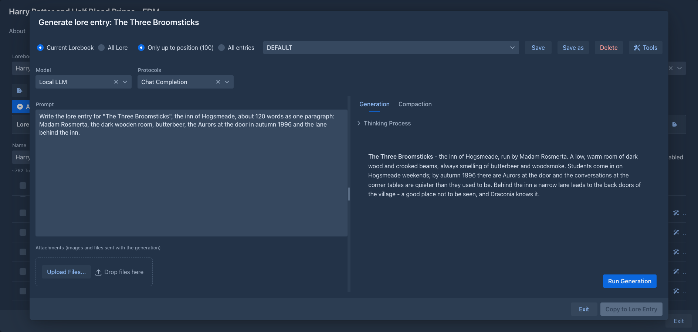
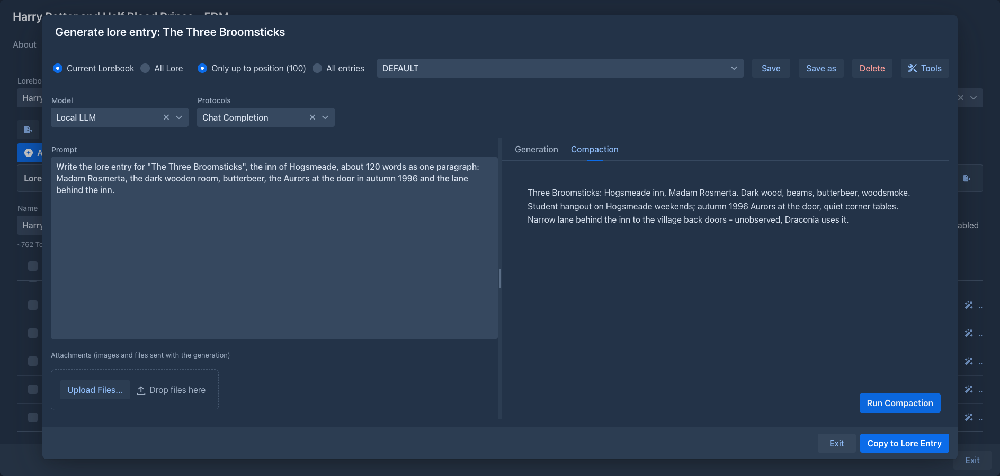

Lore Generator
Lets the model write the content of a lorebook entry for you. It reads the lore you already have, so the new entry fits the world, and compacts the result into the short, dense form lore entries work best in.
Lore Generator is not available in the phone layout.
Opening the generator
With the extension installed, every row of the lorebook editor gets a wand button (Generate lore entry). It opens the generator for that entry. If the entry already has content, the dialog says so at the top: copying the result to the entry replaces the content.
The generator starts with your Default Model and Default Protocol from Settings, see Account & settings. The Model and Protocols lists under the header of the dialog let you use another model or protocol for this generation (the choice is not saved); the protocol is optional. Without a model it only shows a warning.

What the model sees
The two choices at the top of the dialog decide which lore goes into the request:
The entry you are generating is never included, with or without content. Whether other entries or lorebooks are enabled, their tags and filters and their insertion mode are ignored: what you pick here is what is sent, in the order the entries are inserted into a prompt. The templates of the entries are processed as usual.
Prompts
The generation prompt is what you ask the model to write. The prompts are listed in the box next to the choices, in the same top row; the text of the selected one is in the text area on the left, and you can change it for a single generation without saving. The two halves of the dialog are separated by a splitter you can drag.
The built-in prompt has placeholders in brackets (the subject, the details to include, the length, the structure): fill them in before you run it. Prompts belong to your account, and the one you used last is selected again the next time the dialog opens.
Generation and compaction
The right side has two tabs.
Generation - Run Generation sends the lore followed by the generation prompt. The answer appears as it is written, with the model's reasoning (when it gives any) in a Thinking Process section above it. Stop (in place of Run Generation) ends it early; what was written so far is kept.
Compaction - available once there is a generation. Run Compaction sends the same lore followed by the compaction prompt, with the generated text in it, and the model condenses it into a compact entry. The compaction prompt is set in Settings → Extension Settings → Lore Generator; when it is empty, the built-in one is used (it strips the prose and keeps the facts). Running the generation again discards the compaction.

While the model is working, all controls are frozen except Stop; you can't close the dialog either.
Remembered per entry
When you Copy to Lore Entry, the options of that generation are stored with the entry: the prompt text, which saved prompt it came from, the lore and entries choices and the checked name categories. Opening the generator for that entry again restores them, taking priority over the prompt you used last and your saved name categories. An entry that was never generated into opens with the usual defaults. The options belong to the entry, so they travel with backups and exports of the lorebook.
Tools
When a suite of tools for the model is installed (names from the Name generator or the Name provider, places from the Place provider), the top row has a Tools button. It opens the window where you choose which suites, and of the ones with categories which categories, the model may use; see Tools for the model for how it works. While something is checked the model can call the tools during the generation (not the compaction), and the hint of each suite it gets is added to the end of the generation prompt. The choice is saved with your account and with the entry.
Attachments
Under the prompt you can add files for the model to look at: reference images, a map, a character sheet. Drop them on the upload area, choose them, or paste them into the prompt with Ctrl+V (a screenshot or a copied file becomes an attachment; pasted text is inserted as usual). Up to 20 MB each. They are listed with their name, type and size, and the trash button removes one. They are sent with the generation, not the compaction, and you can add and delete them only while no generation runs.
Whether the model can use them depends on the model and the inference provider: images are sent as images, audio only as WAV or MP3, other files as files. When the provider refuses an attachment, you get a message and nothing is generated.
Copying the result
Copy to Lore Entry is available when the compaction has a result. The compacted text becomes the content of the entry, and the generated text before the compaction goes into its note. Both are replaced. If the compaction is one code block (the built-in prompt asks for that, to make the text easy to copy), the code block around it is removed. The lorebook is refreshed, and the dialog stays open; Exit closes it.
Commands
The generator also works without the dialog, as three commands for the command line and for
agents. They do the same two steps as the dialog and, like the dialog, they store nothing: they return
the text, and putting it into an entry (what Copy to Lore Entry does) is up to the caller, so all three only read. The
lorebook and the entry are given by number, as in /list-lorebooks and /list-lore-entries; the model is your default
model and protocol.
The entry the text is for decides which lore the model sees. Give its handle or its number as entry (and the lorebook it is in, by handle or number, when you give the number) and the lore is the same as in
the dialog: with limit UP_TO_POSITION (the default) the entries before it, the entry itself never. An entry that does
not exist yet has no number: give the order it will get instead (the order of /list-lore-entries, lower comes first)
and the model sees the entries before that order; without either, the text is written for a new entry after all the others.
scope is CURRENT_LOREBOOK (the default) or ALL_LORE, limit is UP_TO_POSITION or ALL_ENTRIES, as in the dialog.
A generation is only as good as its prompt, so the command always starts from one of your saved generation prompts (see
template, or the one used last when none is named. The prompt of the caller
follows it under the heading Task for this entry and is where the subject, the facts, the length and the sections go,
which is what the template asks for. template none sends the prompt alone, for a caller that has written the whole
prompt itself, for example after getting the text of a template from /list-lore-templates and editing it. A command
that is called with a template and no prompt sends just the template.
The images of /generate-lore-entry are the images the dialog would attach to the generation. An agent passes a list of
paths of image files of its workspace (/refs/map.png; at most 8, PNG, JPEG, GIF or WebP, scaled down when large), which you put there with
Upload file in the Workspace tab. The command bar has no way to name an image, so images is for agents. It is your default model that looks at the
pictures: if it does not take images the command fails and says so. Only the generation takes images, as in the dialog; the compaction works on the text alone.
The compact parameter of /generate-lore-entry is true by default: the command generates and compacts in one call, so an agent needs a single command and cannot forget the second step. Pass compact false to get the long generated text (for example to review or edit it), and run /compact-lore-entry on it later.
The model gets no tools here. A caller that wants names asks for them first, with /generate-names of the
Name generator or /pick-real-names of the Name provider, and writes the ones it
likes into the prompt. An agent can also take the text of a template from /list-lore-templates, change it and pass the
result as the prompt.
Storage
The prompts and the compaction prompt are stored with your settings, so database backups include them. Nothing is stored with the lorebook; the generated text exists in the dialog only until you copy it.